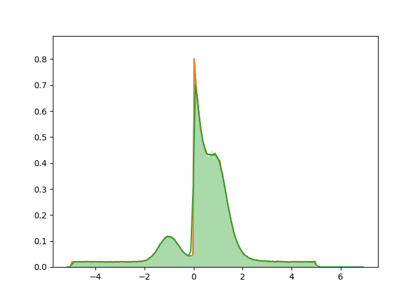

3 Methods
We describe our methods in this chapter.
import numpy as np
import matplotlib.pyplot as plt
import seaborn as sns
import tensorflow as tf
import tensorflow_probability as tfp
from zfit_benchmark.timer import Timer
import zfit as z## /opt/miniconda3/envs/ba-thesis/lib/python3.7/site-packages/zfit/util/execution.py:70: UserWarning: Not running on Linux. Determining available cpus for thread can failand be overestimated. Workaround (only if too many cpus are used):`zfit.run.set_n_cpu(your_cpu_number)`
## warnings.warn("Not running on Linux. Determining available cpus for thread can fail"3.1 Generation of Test Distribution
Listing: Test Distribution generation
r_seed = 1978239485
n_datapoints = 1000000
tfd = tfp.distributions
mix_3gauss_1exp_1uni = tfd.Mixture(
cat=tfd.Categorical(probs=[0.1, 0.2, 0.1, 0.4, 0.2]),
components=[
tfd.Normal(loc=-1., scale=0.4),
tfd.Normal(loc=+1., scale=0.5),
tfd.Normal(loc=+1., scale=0.3),
tfd.Exponential(rate=2),
tfd.Uniform(low=-5, high=5)
])
data = mix_3gauss_1exp_1uni.sample(sample_shape=n_datapoints, seed=r_seed).numpy()
ax = plt.gca()
n_testpoints = 200
fac1 = 1.0 / np.sqrt(2.0 * np.pi)
exp_fac1 = -1.0/2.0
h1 = 0.01
y_fac1 = 1.0/(h1*n_datapoints)
with Timer ("Benchmarking") as timer:
with timer.child('tf.simple-kde'):
@tf.function(autograph=False)
def tf_kde():
fac = tf.constant(fac1, tf.float64)
exp_fac = tf.constant(exp_fac1, tf.float64)
y_fac = tf.constant(y_fac1, tf.float64)
h = tf.constant(h1, tf.float64)
data_tf = tf.convert_to_tensor(data, tf.float64)
gauss_kernel = lambda x: tf.math.multiply(fac, tf.math.exp(tf.math.multiply(exp_fac, tf.math.square(x))))
calc_value = lambda x: tf.math.multiply(y_fac, tf.math.reduce_sum(gauss_kernel(tf.math.divide(tf.math.subtract(x, data_tf), h))))
x = tf.linspace(tf.cast(-5.0, tf.float64), tf.cast(5.0, tf.float64), num=tf.cast(n_testpoints, tf.int64))
y = tf.zeros(n_testpoints)
return x, tf.map_fn(calc_value, x)
x, y = tf_kde()
sns.lineplot(x, y, ax=ax)
timer.stop()
with timer.child('simple-kde'):
fac = fac1
exp_fac = exp_fac1
y_fac = y_fac1
h = h1
gauss_kernel = lambda x: fac * np.exp(exp_fac * x**2)
x2 = np.linspace(-5.0, 5.0, num=n_testpoints)
y2 = np.zeros(n_testpoints)
for i, x_i in enumerate(x2):
y2[i] = y_fac * np.sum(gauss_kernel((x_i-data)/h))
sns.lineplot(x2,y2, ax=ax)
timer.stop()
with timer.child('sns.distplot'):
plot = sns.distplot(data, bins=1000, kde=True, rug=False, ax=ax)
timer.stop()
print(timer.child('tf.simple-kde').elapsed)## 1.443472787999999340513568313## 1.684886838999998914800926286## 1.086231682999999392791323771

Kernel Density Estimation
\[\begin{equation} \mathbf{r} \equiv \begin{bmatrix} y \\ \theta \end{bmatrix} \tag{3.1} \end{equation}\]